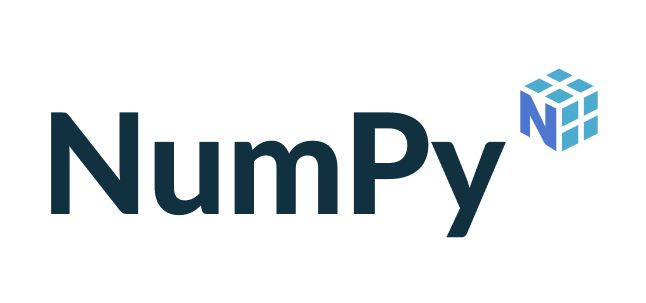

🎯 Learning Objectives
By the end of this lecture, you will be able to:
- ✅ Perform element-wise arithmetic and universal functions (ufuncs)
- ✅ Understand and apply broadcasting rules
- ✅ Use aggregation functions:
sum,mean,std,min,max - ✅ Vectorize custom functions for performance
- ✅ Compare NumPy array performance vs. Python lists
📑 Table of Contents
- ● 📊 Lecture 11 — NumPy — Part 2
- 1. ● 🧩 What is NumPy and Why Use It?
- 2. ▸ 🔹 Key Features
- 3. ● NumPy arrays
- 4. ▸ To use numpy you need to import the module
- 5. ▸ 🧩 Creating NumPy Arrays — Examples of Different Initialization Methods
- 6. ▸ 🧩 NumPy Array Attributes
- 7. ▸ 🧩 Creating and Reading Arrays from Files in NumPy
- 8. ▸ 🧩 Accessing and Modifying Array Elements in NumPy
- 9. ▸ Reshaping of Arrays
- 10. ▸ Fancy indexing
- 11. ▸ Exercise:
- 12. ● Array math
- 13. ● NumPy Arrays vs. Python Lists, which one is faster ?
- 14. ▸ ⚡ What Just Happened? — **Vectorization**
- 15. ▸ 🧠 What Does the Magic Command `%timeit` Do?
- 16. ▸ 🧩 Data Types for NumPy Arrays (`ndarray`)
- 17. ● Vectorizing functions
- 18. ● Broadcasting
- 19. ▸ 🎯 Key Takeaways
🔗 Building on What You Know
In Part 1, you created NumPy arrays and learned indexing, slicing, and basic math. This lecture goes deeper: file I/O, performance benchmarks, data types, and advanced techniques that will make your numerical code fast and memory-efficient.

🧩 What is NumPy and Why Use It?#
NumPy (Numerical Python) is the core library for scientific and numerical computing in Python.
It provides a high-performance multidimensional array object (ndarray) and tools for efficient operations on vectors, matrices, and higher-dimensional data.
🔹 Key Features#
Speed & Efficiency:
Implemented in C and Fortran, NumPy executes vectorized operations much faster than standard Python lists — making it ideal for data science and machine learning.Mathematical Power:
Supports advanced computations such as linear algebra, matrix operations, Fourier transforms, and statistical calculations (mean, median, range, etc.).Ecosystem Foundation:
NumPy is the backbone of the scientific Python stack — libraries like Pandas, Scikit-learn, and TensorFlow are built on top of it.Machine Learning Relevance:
Since ML algorithms rely heavily on vectors and matrices, NumPy is essential for tasks like classification, regression, and clustering.
✅ Moreover:
NumPy is a fast, efficient, and foundational library that powers numerical and scientific computing in Python — serving as the engine behind most AI and data analysis workflows.
NumPy arrays#
At the core of the NumPy package, is the ndarray object. This encapsulates \(n\)-dimensional arrays of homogeneous data types, with many operations being performed in compiled code for performance.
A numpy array is a grid of values, all of the same type, and is indexed by a tuple of nonnegative integers. The number of dimensions is the rank of the array; the shape of an array is a tuple of integers giving the size of the array along each dimension.
Data manipulation in Python is nearly synonymous with NumPy array manipulation: even newer tools like Pandas are built around the NumPy array. This section will present several examples of using NumPy array manipulation to access data and subarrays, and to split, reshape, and join the arrays.
To use numpy you need to import the module#
Import conventions : The recommended convention to import numpy is:
import numpy as np
import numpy as np
There are a number of ways to initialize new numpy arrays, for example from:
a Python list or tuples;
using functions that are dedicated to generating numpy arrays, such as
arange,linspace, etc.;reading data from files.
🧩 Creating NumPy Arrays — Examples of Different Initialization Methods#
NumPy provides several ways to create arrays, depending on the data source or the purpose of your computation. Here are examples for each common creation mode:
🔹 1. From a Python List or Tuple#
You can convert existing Python lists or tuples into NumPy arrays using np.array().
import numpy as np
# From a Python list
a = np.array([1, 2, 3, 4])
print(a) # Output: [1 2 3 4]
# From a tuple
b = np.array((5, 6, 7, 8))
print(b) # Output: [5 6 7 8]
import numpy as np
# From a Python list
a = np.array([1.5, 2.4, 3.1, 4.9])
print(a) # Output: [1 2 3 4]
print(type(a))
print('=====================================')
[1.5 2.4 3.1 4.9]
<class 'numpy.ndarray'>
=====================================
import numpy as np
# From a Python list
a = np.array([1, 2, 3, 4])
print(a) # Output: [1 2 3 4]
print(type(a))
print('=====================================')
# From a tuple
b = np.array((5, 6, 7, 8))
print(b) # Output: [5 6 7 8]
print(type(b))
[1 2 3 4]
<class 'numpy.ndarray'>
=====================================
[5 6 7 8]
<class 'numpy.ndarray'>
🔹 2. Using Array-Generating Functions#
NumPy provides built-in functions to generate arrays efficiently:
# Using arange(start, stop, step)
c = np.arange(0, 10, 2)
print(c) # Output: [0 2 4 6 8]
# Using linspace(start, stop, num)
d = np.linspace(0, 1, 5)
print(d) # Output: [0. 0.25 0.5 0.75 1. ]
# Using arange(start, stop, step)
c = np.arange(0, 10, 2)
print(c) # Output: [0 2 4 6 8]
print('=====================================')
# Using linspace(start, stop, num)
d = np.linspace(0, 1, 5)
print(d) # Output: [0. 0.25 0.5 0.75 1. ]
[0 2 4 6 8]
=====================================
[0. 0.25 0.5 0.75 1. ]
a = np.array([1.3, 2.7, 3.5])
print(a.ndim) # Output: 1
1
b = np.array([[1, 2, 3],
[4, 5, 6]])
print(b.ndim) # Output: 2
2
d = np.array([[1, 2, 3],
[4, 5, 6],[1.3, 2.7, 3.5]])
print(d.ndim) # Output: 2
2
e = np.array([[[1, 2, 3],[2.5, 3.6, 7.8],
[4, 5, 6],[1.3, 2.7, 3.5]]])
print(e.ndim)
print(e)
<div style="text-align: right; margin-top: 12px; font-size: 0.85em;"><a href="#table-of-contents" style="color: #667eea; text-decoration: none;">↑ Back to TOC</a></div>
3
[[[1. 2. 3. ]
[2.5 3.6 7.8]
[4. 5. 6. ]
[1.3 2.7 3.5]]]
🧩 NumPy Array Attributes#
Each NumPy array comes with useful attributes that describe its structure.
These attributes help you understand how your data is organized in memory and how to manipulate it effectively.
🔹 1. ndim — Number of Dimensions#
The ndim attribute tells you how many dimensions (axes) the array has.
import numpy as np
# 1D array
a = np.array([1, 2, 3])
print(a.ndim) # Output: 1
🧠 Explanation:
This is a 1-dimensional array (a single row of elements).
# 2D array
b = np.array([[1, 2, 3],
[4, 5, 6]])
print(b.ndim) # Output: 2
🧩 Here, b has 2 dimensions — rows and columns.
# 3D array
c = np.array([[[1, 2], [3, 4]],
[[5, 6], [7, 8]]])
print(c.ndim) # Output: 3
💡 A 3D array can be thought of as a stack of 2D matrices.
🔹 2. shape — Dimensions’ Size#
The shape attribute gives a tuple representing the size of each dimension.
print(a.shape) # Output: (3,)
print(b.shape) # Output: (2, 3)
print(c.shape) # Output: (2, 2, 2)
🧠 Explanation:
(3,)→ one dimension of length 3 (a vector).(2, 3)→ 2 rows, 3 columns (a matrix).(2, 2, 2)→ 2 blocks, each of shape 2×2 (a 3D array).
🔹 3. size — Total Number of Elements#
The size attribute gives the total number of elements in the array —
the product of all the dimensions.
print(a.size) # Output: 3
print(b.size) # Output: 6
print(c.size) # Output: 8
🧮 Explanation:
For
b: (2 \text{ rows} \times 3 \text{ columns} = 6)For
c: (2 \times 2 \times 2 = 8)
✅ *Overview#
Attribute |
Meaning |
Example Value |
Description |
|---|---|---|---|
|
Number of dimensions |
|
2D array (matrix) |
|
Size of each dimension |
|
2 rows, 3 columns |
|
Total number of elements |
|
All entries combined |
💡 In short:
Use
.ndimto find how many axes the array has.Use
.shapeto see the layout of dimensions.Use
.sizeto know how many total elements exist.
These attributes are essential for debugging, reshaping arrays, and understanding your data’s structure.
Exercise: Creating arrays using functions
Experiment with
arange,linspace,ones,zeros,eye,fullanddiag. Create different kinds of arrays with random numbers. Try setting the seed before creating an array with random values. Look at the functionnp.empty. What does it do? When might this be useful?
🧮 These functions are particularly useful for mathematical modeling, simulations, and ML preprocessing.
3. Reading Data from Files#
🧩 Creating and Reading Arrays from Files in NumPy#
NumPy allows you not only to read arrays from files, but also to create and write your own data files first.
Let’s go through the full process — creating, displaying, and reading data from files.
🔹 1. Create a Text File with Data#
You can use NumPy’s savetxt() function to write arrays to a text file.
import numpy as np
# Create a NumPy array
data = np.array([[1, 2, 3],
[4, 5, 6]])
# Save the array to a text file (comma-separated)
np.savetxt('data.txt', data, delimiter=',')
print("✅ File 'data.txt' created successfully!")
import numpy as np
# Create a NumPy array
data = np.array([[1, 2, 3],
[4, 5, 6]])
# Save the array to a text file (comma-separated)
np.savetxt('data.txt', data, delimiter=',')
print("✅ File 'data.txt' created successfully!")
✅ File 'data.txt' created successfully!
🔹 2. Display the Contents of the File#
To confirm that the file has been created correctly, you can open and display it:
# Display file contents
with open('data.txt', 'r') as file:
contents = file.read()
print("📄 File contents:")
print(contents)
Expected Output:
1.000000000000000000e+00,2.000000000000000000e+00,3.000000000000000000e+00
4.000000000000000000e+00,5.000000000000000000e+00,6.000000000000000000e+00
(These are the default scientific notation values.)
with open('data.txt', 'r') as file:
contents = file.read()
print("📄 File contents:")
print(contents)
📄 File contents:
1.000000000000000000e+00,2.000000000000000000e+00,3.000000000000000000e+00
4.000000000000000000e+00,5.000000000000000000e+00,6.000000000000000000e+00
🔹 3. Read the Data Back into a NumPy Array#
Now, let’s load the same file into a new array using np.loadtxt():
# Read the array from the text file
g = np.loadtxt('data.txt', delimiter=',')
print("📊 Array loaded from file:")
print(g)
Output:
[[1. 2. 3.]
[4. 5. 6.]]
g = np.loadtxt('data.txt', delimiter=',')
print("📊 Array loaded from file:")
print(g)
📊 Array loaded from file:
[[1. 2. 3.]
[4. 5. 6.]]
✅ In a nutshell#
Step |
Function |
Purpose |
|---|---|---|
Create file |
|
Save array to text/CSV file |
View file |
|
Display file content |
Read file |
|
Load data into a NumPy array |
🧩 Accessing and Modifying Array Elements in NumPy#
Once you’ve created a NumPy array, you can access, modify, or slice its elements using indexing.
Indexing in NumPy works similarly to Python lists but is far more powerful when working with large datasets.
🔹 Example: Accessing Elements by Index#
import numpy as np
a = np.array([1, 2, 3]) # Create a 1D NumPy array
# Access individual elements
print(a[0], a[1], a[2]) # Output: 1 2 3
🧠 Explanation:
Indexing in NumPy starts at 0 (just like in Python lists).
a[0]refers to the first element,a[1]to the second, and so on.
🔹 Example: Modifying Array Elements#
You can change the value of an element by assigning a new value to its index.
a[0] = 5 # Change the first element
print(a) # Output: [5 2 3]
🧩 Explanation:
NumPy arrays are mutable, so you can update elements directly.
The change is applied in place — no need to recreate the array.
🔹 Example: Accessing with Negative Indexing#
Just like Python lists, you can use negative indices to access elements from the end.
print(a[-1]) # Output: 3 (last element)
print(a[-2]) # Output: 2 (second-to-last element)
🔹 Example: Multi-Dimensional Indexing#
For 2D arrays (matrices), you use two indices: one for the row and one for the column.
b = np.array([[1, 2, 3],
[4, 5, 6]])
print(b[0, 0]) # Output: 1 (row 0, column 0)
print(b[1, 2]) # Output: 6 (row 1, column 2)
You can also modify elements the same way:
b[0, 1] = 9
print(b)
# Output:
# [[1 9 3]
# [4 5 6]]
<div style="text-align: right; margin-top: 12px; font-size: 0.85em;"><a href="#table-of-contents" style="color: #667eea; text-decoration: none;">↑ Back to TOC</a></div>
Reshaping of Arrays#
Another useful type of operation is reshaping of arrays. The most flexible way of doing this is with the reshape method. For example, if you want to put the numbers \(1\) through \(9\) in a \(3 \times 3\) grid, you can do the following:
grid = np.arange(1, 10).reshape((3, 3))
print(grid)
[[1 2 3]
[4 5 6]
[7 8 9]]
Try: Note that for this to work, the size of the initial array must match the size of the reshaped array. Try a few examples that you will create.
Fancy indexing#
Fancy indexing is the name for when an array or a list is used in-place of an index:
twenty = (np.arange(4 * 5)).reshape(4, 5)
twenty
array([[ 0, 1, 2, 3, 4],
[ 5, 6, 7, 8, 9],
[10, 11, 12, 13, 14],
[15, 16, 17, 18, 19]])
row_indices = [1, 2, 3]
twenty[row_indices]
array([[ 5, 6, 7, 8, 9],
[10, 11, 12, 13, 14],
[15, 16, 17, 18, 19]])
col_indices = [1, 2, -1] # remember, index -1 means the last element
twenty[row_indices, col_indices]
array([ 6, 12, 19])
We can also use index masks:
If the index mask is a NumPy array of data type bool, then an element is selected (True) or not (False) depending on the value of the index mask at the position of each element
# 1D array of random integers
# get 10 integers from 0 to 23
num_samples = 10
integers = np.random.randint(23, size=num_samples)
integers
array([ 8, 20, 8, 4, 16, 6, 7, 8, 15, 9], dtype=int32)
# mask has to be of the same shape as the array to be indexed; else IndexError would be thrown
# mask for indexing alternate elements in the array
row_mask = np.array([True, False, True, False, True, False, True, False, True, False])
integers[row_mask]
array([ 8, 8, 16, 7, 15], dtype=int32)
This feature is very useful to conditionally select elements from an array, using for example comparison operators:
range_arr = np.arange(0, 10, 0.5)
range_arr
array([0. , 0.5, 1. , 1.5, 2. , 2.5, 3. , 3.5, 4. , 4.5, 5. , 5.5, 6. ,
6.5, 7. , 7.5, 8. , 8.5, 9. , 9.5])
mask = (range_arr > 5) * (range_arr < 7.5)
mask
# What is happenning here?
array([False, False, False, False, False, False, False, False, False,
False, False, True, True, True, True, False, False, False,
False, False])
range_arr[mask]
<div style="text-align: right; margin-top: 12px; font-size: 0.85em;"><a href="#table-of-contents" style="color: #667eea; text-decoration: none;">↑ Back to TOC</a></div>
array([5.5, 6. , 6.5, 7. ])
Exercise:#
Investigate the Concatenation, Splitting, Copies,repeat, tile, vstack, hstack functions for numpy arrays.
Investigate Views versus copies in NumPy
Array math#
Basic mathematical functions operate elementwise on arrays, and are available both as operator overloads and as functions in the numpy module:
import numpy as np
x = np.array([[1,2],[3,4]], dtype=np.float64)
y = np.array([[5,6],[7,8]], dtype=np.float64)
# Elementwise sum; both produce the array
# [[ 6.0 8.0]
# [10.0 12.0]]
print(x + y)
print("---------------------------")
print(np.add(x, y))
print("\n \n")
[[ 6. 8.]
[10. 12.]]
---------------------------
[[ 6. 8.]
[10. 12.]]
import numpy as np
x = np.array([[1,2],[3,4]], dtype=np.float64)
y = np.array([[5,6],[7,8]], dtype=np.float64)
# Elementwise sum; both produce the array
# [[ 6.0 8.0]
# [10.0 12.0]]
print(x + y)
print("---------------------------")
print(np.add(x, y))
print("\n \n")
# Elementwise difference; both produce the array
# [[-4.0 -4.0]
# [-4.0 -4.0]]
print(x - y)
print("---------------------------")
print(np.subtract(x, y))
print("\n \n")
# Elementwise product; both produce the array
# [[ 5.0 12.0]
# [21.0 32.0]]
print(x * y)
print("---------------------------")
print(np.multiply(x, y))
print("\n \n")
# Elementwise division; both produce the array
# [[ 0.2 0.33333333]
# [ 0.42857143 0.5 ]]
print(x / y)
print("---------------------------")
print(np.divide(x, y))
print("\n \n")
# Elementwise square root; produces the array
# [[ 1. 1.41421356]
# [ 1.73205081 2. ]]
print(np.sqrt(x))
[[ 6. 8.]
[10. 12.]]
---------------------------
[[ 6. 8.]
[10. 12.]]
[[-4. -4.]
[-4. -4.]]
---------------------------
[[-4. -4.]
[-4. -4.]]
[[ 5. 12.]
[21. 32.]]
---------------------------
[[ 5. 12.]
[21. 32.]]
[[0.2 0.33333333]
[0.42857143 0.5 ]]
---------------------------
[[0.2 0.33333333]
[0.42857143 0.5 ]]
[[1. 1.41421356]
[1.73205081 2. ]]
We instead use the dot function to compute inner products of vectors, to multiply a vector by a matrix, and to multiply matrices. dot is available both as a function in the numpy module and as an instance method of array objects:
import numpy as np
x = np.array([[1,2],[3,4]])
y = np.array([[5,6],[7,8]])
v = np.array([9,10])
w = np.array([11, 12])
# Inner product of vectors; both produce 219
print(v.dot(w))
print("---------------------------")
print(np.dot(v, w))
print("\n \n")
# Matrix / vector product; both produce the rank 1 array [29 67]
print(x.dot(v))
print("---------------------------")
print(np.dot(x, v))
print("\n \n")
# Matrix / matrix product; both produce the rank 2 array
# [[19 22]
# [43 50]]
print(x.dot(y))
print("---------------------------")
print(np.dot(x, y))
219
---------------------------
219
[29 67]
---------------------------
[29 67]
[[19 22]
[43 50]]
---------------------------
[[19 22]
[43 50]]
You can explore the complete collection of NumPy’s mathematical functions in its official documentation.
For more specialized topics, the linear algebra functions are listed here, and the statistical routines can be found on this page.
NumPy Arrays vs. Python Lists, which one is faster ?#
We’ll create a large array of one million numbers and multiply each element by \(2\).
import numpy as np
# Creating numpy array
numpy_array = np.arange(1_000_000)
# Creating python list
python_list = list(range(1_000_000))
Now, let’s compute the time of execution of both using the %timeit magic command
# the execution time of the numpy array
%timeit array = numpy_array * 2
3.99 ms ± 118 μs per loop (mean ± std. dev. of 7 runs, 100 loops each)
# the execution time of the python list
%timeit lst = [num * 2 for num in python_list]
<div style="text-align: right; margin-top: 12px; font-size: 0.85em;"><a href="#table-of-contents" style="color: #667eea; text-decoration: none;">↑ Back to TOC</a></div>
95 ms ± 20.4 ms per loop (mean ± std. dev. of 7 runs, 1 loop each)
⚡ What Just Happened? — Vectorization#
When you compared plain Python operations with NumPy operations, you probably noticed that NumPy is dramatically faster — often by 20x or more!
This incredible speed is due to a concept called Vectorization. Instead of looping through elements one by one (as Python lists do), NumPy performs operations on the entire array at once, using highly optimized pre-compiled C code under the hood.
🧠 What Does the Magic Command %timeit Do?#
The %timeit command in Jupyter/IPython is a benchmarking tool that measures how long it takes for a line or block of code to run.
It executes the code multiple times to compute an accurate average execution time.
🔹 Usage Examples#
Single Line Timing
Use%timeitfor short, one-line commands:%timeit [x**2 for x in range(1000)]
Multiple Line Timing Use
%%timeit(note the double%) at the top of a cell to time multiple lines of code:%%timeit total = 0 for i in range(1000): total += i**2
✅ Take away
Vectorization makes NumPy fast by performing operations on entire arrays in compiled code.
%timeithelps you measure and compare the speed of your code precisely.
Data Types#
🧩 Data Types for NumPy Arrays (ndarray)#
Every NumPy array (ndarray) has a data type, known as its dtype (data-type object),
which defines the kind of elements stored in the array — such as integers, floats, strings, or complex numbers.
Understanding data types is important because they determine:
How much memory each element uses,
What operations can be performed,
And how data is interpreted internally.
🔹 1. Checking the Data Type#
You can use the .dtype attribute to check the type of elements in an array:
import numpy as np
a = np.array([1, 2, 3])
b = np.array([1.0, 2.0, 3.0])
print(a.dtype) # Output: int64 (or int32 depending on your system)
print(b.dtype) # Output: float64
🧠 Explanation:
acontains integers → NumPy automatically assignsint64(orint32).bcontains decimals → assigned asfloat64.
🔹 2. Specifying the Data Type#
You can manually specify a data type using the dtype parameter:
c = np.array([1, 2, 3], dtype=float)
print(c) # Output: [1. 2. 3.]
print(c.dtype) # Output: float64
Or explicitly define the precision:
d = np.array([1, 2, 3], dtype=np.int8)
print(d.dtype) # Output: int8
💡 Tip: Choosing smaller data types like int8 or float32 can save memory in large datasets.
🔹 3. Common NumPy Data Types#
Data Type |
Description |
Example |
|---|---|---|
|
Signed integers (various sizes) |
|
|
Unsigned integers (no negatives) |
|
|
Floating-point numbers |
|
|
Complex numbers |
|
|
Boolean (True/False) |
|
|
Strings |
|
🔹 4. Type Conversion (Casting)#
You can convert an existing array to a different data type using .astype():
e = np.array([1.7, 2.3, 3.9])
f = e.astype(int)
print(f) # Output: [1 2 3]
print(f.dtype) # Output: int64
🧮 Explanation:
astype() creates a new array with the converted data type (it does not modify the original array).
Vectorizing functions#
As mentioned several times by now, to get good performance we should always try to avoid looping over elements in our vectors and matrices, and instead use vectorized algorithms. The first step in converting a scalar algorithm to a vectorized algorithm is to make sure that the functions we write work with vector inputs.
def Theta(x):
"""
scalar implementation of the Heaviside step function.
"""
if x >= 0:
return 1
else:
return 0
v1 = np.array([-3,-2,-1,0,1,2,3])
Theta(v1)
---------------------------------------------------------------------------
ValueError Traceback (most recent call last)
Cell In[3], line 4
1 import numpy as np
2 v1 = np.array([-3,-2,-1,0,1,2,3])
----> 4 Theta(v1)
Cell In[1], line 5, in Theta(x)
1 def Theta(x):
2 """
3 scalar implementation of the Heaviside step function.
4 """
----> 5 if x >= 0:
6 return 1
7 else:
ValueError: The truth value of an array with more than one element is ambiguous. Use a.any() or a.all()
That didn’t work because we didn’t write the function Theta so that it can handle a vector input. To get a vectorized version of Theta we can use the Numpy function vectorize. In many cases it can automatically vectorize a function:
Theta_vec = np.vectorize(Theta)
Theta_vec(v1)
array([0, 0, 0, 1, 1, 1, 1])
On the Other Hand (OTHO), we can also implement the function to accept a vector input from the beginning (requires more effort but might give better performance):
def Theta(x):
"""
Vector-aware implementation of the Heaviside step function.
"""
return 1 * (x >= 0)
Theta(v1)
array([0, 0, 0, 1, 1, 1, 1])
# it even works with scalar input
Theta(-1.2), Theta(2.6)
(0, 1)
Numpy provides many more functions for manipulating arrays; you can see the full list in the documentation.
Broadcasting#
Broadcasting is a powerful mechanism that allows numpy to work with arrays of different shapes when performing arithmetic operations. Frequently we have a smaller array and a larger array, and we want to use the smaller array multiple times to perform some operation on the larger array.
For example, suppose that we want to add a constant vector to each row of a matrix. We could do it like this:
import numpy as np
# We will add the vector v to each row of the matrix x,
# storing the result in the matrix y
x = np.array([[1,2,3], [4,5,6], [7,8,9], [10, 11, 12]])
v = np.array([1, 0, 1])
y = np.empty_like(x) # Create an empty matrix with the same shape as x
# Add the vector v to each row of the matrix x with an explicit loop
for i in range(4):
y[i, :] = x[i, :] + v
# Now y is the following
# [[ 2 2 4]
# [ 5 5 7]
# [ 8 8 10]
# [11 11 13]]
print(y)
[[ 2 2 4]
[ 5 5 7]
[ 8 8 10]
[11 11 13]]
This works; however when the matrix x is very large, computing an explicit loop in Python could be slow. Note that adding the vector v to each row of the matrix x is equivalent to forming a matrix vv by stacking multiple copies of v vertically, then performing elementwise summation of x and vv. We could implement this approach like this:
import numpy as np
# We will add the vector v to each row of the matrix x,
# storing the result in the matrix y
x = np.array([[1,2,3], [4,5,6], [7,8,9], [10, 11, 12]])
v = np.array([1, 0, 1])
vv = np.tile(v, (4, 1)) # Stack 4 copies of v on top of each other
print(vv) # Prints "[[1 0 1]
# [1 0 1]
# [1 0 1]
# [1 0 1]]"
y = x + vv # Add x and vv elementwise
print(y) # Prints "[[ 2 2 4
# [ 5 5 7]
# [ 8 8 10]
# [11 11 13]]"
[[1 0 1]
[1 0 1]
[1 0 1]
[1 0 1]]
[[ 2 2 4]
[ 5 5 7]
[ 8 8 10]
[11 11 13]]
Numpy broadcasting allows us to perform this computation without actually creating multiple copies of v. Consider this version, using broadcasting:
import numpy as np
# We will add the vector v to each row of the matrix x,
# storing the result in the matrix y
x = np.array([[1,2,3], [4,5,6], [7,8,9], [10, 11, 12]])
v = np.array([1, 0, 1])
y = x + v # Add v to each row of x using broadcasting
print(y) # Prints "[[ 2 2 4]
# [ 5 5 7]
# [ 8 8 10]
# [11 11 13]]"
[[ 2 2 4]
[ 5 5 7]
[ 8 8 10]
[11 11 13]]
The line y = x + v works even though x has shape (4, 3) and v has shape (3,) due to broadcasting; this line works as if v actually had shape (4, 3), where each row was a copy of v, and the sum was performed elementwise.
Broadcasting two arrays together follows these rules:
If the arrays do not have the same rank, prepend the shape of the lower rank array with 1s until both shapes have the same length.
The two arrays are said to be compatible in a dimension if they have the same size in the dimension, or if one of the arrays has size 1 in that dimension.
The arrays can be broadcast together if they are compatible in all dimensions.
After broadcasting, each array behaves as if it had shape equal to the elementwise maximum of shapes of the two input arrays.
In any dimension where one array had size 1 and the other array had size greater than 1, the first array behaves as if it were copied along that dimension
If this explanation does not make sense, try reading the explanation from the documentation Functions that support broadcasting are known as universal functions. You can find the list of all universal functions in the documentation.
Here are some applications of broadcasting:
import numpy as np
# Compute outer product of vectors
v = np.array([1,2,3]) # v has shape (3,)
w = np.array([4,5]) # w has shape (2,)
# To compute an outer product, we first reshape v to be a column
# vector of shape (3, 1); we can then broadcast it against w to yield
# an output of shape (3, 2), which is the outer product of v and w:
# [[ 4 5]
# [ 8 10]
# [12 15]]
print(np.reshape(v, (3, 1)) * w)
# Add a vector to each row of a matrix
x = np.array([[1,2,3], [4,5,6]])
# x has shape (2, 3) and v has shape (3,) so they broadcast to (2, 3),
# giving the following matrix:
# [[2 4 6]
# [5 7 9]]
print(x + v)
print('----------------------------')
# Add a vector to each column of a matrix
# x has shape (2, 3) and w has shape (2,).
# If we transpose x then it has shape (3, 2) and can be broadcast
# against w to yield a result of shape (3, 2); transposing this result
# yields the final result of shape (2, 3) which is the matrix x with
# the vector w added to each column. Gives the following matrix:
# [[ 5 6 7]
# [ 9 10 11]]
print((x.T + w).T)
print('----------------------------')
# Another solution is to reshape w to be a column vector of shape (2, 1);
# we can then broadcast it directly against x to produce the same
# output.
print(x + np.reshape(w, (2, 1)))
print('----------------------------')
# Multiply a matrix by a constant:
# x has shape (2, 3). Numpy treats scalars as arrays of shape ();
# these can be broadcast together to shape (2, 3), producing the
# following array:
# [[ 2 4 6]
# [ 8 10 12]]
print(x * 2)
[[ 4 5]
[ 8 10]
[12 15]]
[[2 4 6]
[5 7 9]]
----------------------------
[[ 5 6 7]
[ 9 10 11]]
----------------------------
[[ 5 6 7]
[ 9 10 11]]
----------------------------
[[ 2 4 6]
[ 8 10 12]]
Broadcasting typically makes your code more concise and faster, so you should strive to use it where possible.
🎯 Key Takeaways
- Array attributes (
.ndim,.shape,.size,.dtype) describe an array's structure. np.loadtxt()andnp.savetxt()read and write arrays to/from text files.- Reshaping with
.reshape()and.transpose()changes array dimensions without copying data. - Fancy indexing with boolean masks and integer arrays enables powerful data selection.
- NumPy integrates seamlessly with Matplotlib and Pandas for analysis pipelines.
—
—